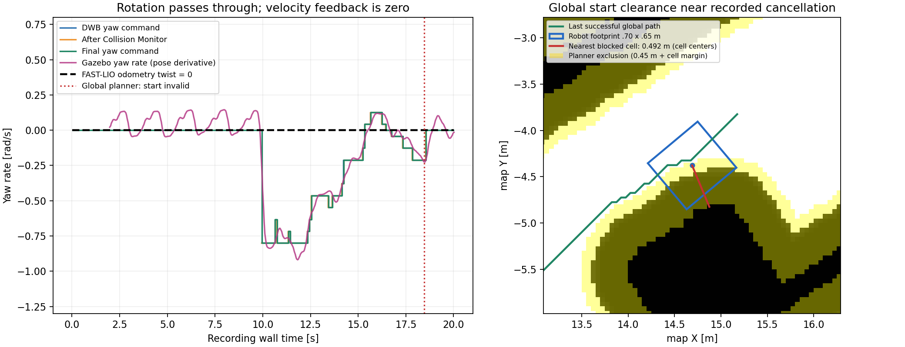

2026-10-27 · 기존 실행을 유지한 읽기 전용 진단 · 코드/파라미터/목표/물리 상태 변경 없음
회전 명령이 항상 차단되는 상태는 아닙니다. 20초 관측에서 −0.8 rad/s 회전이 /cmd_vel까지 전달되고 실제 yaw도 반응했습니다. 동시에 FAST-LIO 속도 입력 누락, DWB 실패 즉시 abort 설정, 전역 출발점 clearance 거부가 확인됐습니다.
| 항목 | 증거 | 의미 |
|---|---|---|
| DWB 후보 전부 거부 | 기존 terminal 로그: No valid trajectories out of 251! 두 차례 | 최적 후보의 비용이 높다는 뜻이 아니라 유효한 후보를 하나도 선택하지 못함. 상세 critic 로그가 꺼져 있어 당시 거부 원인은 확정 불가. |
| failure_tolerance | 실행 중 /controller_server = 0.0 | 이 유형의 일시적인 제어 실패도 FollowPath abort로 이어짐. BT 재시도는 있으나, 그 자체가 회전/후진 복구는 아님. |
| 속도 odometry | /Odometry 172/172개 메시지에서 linear와 angular 모두 0 | pose는 변하고 Gazebo 기준 약 3.91m 이동했음. DWB는 현재 속도를 0으로 입력받고 예측함. |
| Collision Monitor | /legged/cmd_raw와 /legged/cmd_safe 87쌍 모두 일치 | 이번 관측의 회전 명령을 monitor가 차단한 증거 없음. 과거 모든 정지의 원인을 배제하는 것은 아님. |
| 전역 계획 | 관측 18.469초: grid start invalid → 추종 취소 → 18.85초 safe_command_timeout | 명령 timeout은 이 구간에서 계획 중단의 뒤따른 결과임. |
| 기존 시험 설정 | final guard OFF / global·local inflation 0.4m | 정상 반영됐음. planner costmap_clearance_m=0.45는 별도 유지됨. |

왼쪽: 실제 회전은 명령에 반응하지만 FAST-LIO twist는 0으로 고정되어 있습니다. 오른쪽: 검정은 높은 cost, 파랑은 현재 로봇 footprint, 노랑은 별도 planner 제외 영역입니다. 녹색은 마지막으로 성공한 전역 경로입니다.
실패 약 0.107초 전 지도에서 로봇 중심 셀의 원래 cost는 0이고, 가까운 lethal/unknown 셀까지의 셀 중심 거리는 0.492m입니다. planner는 0.45 + √2 × 0.05 = 0.521m 범위를 별도로 막습니다. 해당 snapshot의 출발 셀은 이 제외 영역에 들어갑니다. inflation 0.4m와 이 조건은 서로 다릅니다.
동일 snapshot의 0.70×0.65m 사각형 면적 겹침 검사는 통과했습니다. 가까운 local snapshot에서도 현재 heading과 ±30/60/90°의 정지 자세는 겹침 검사를 통과했습니다. 이것은 정적인 면적 검사이며, DWB의 모든 critic·시간에 따른 회전 궤적·실제 보행 안정성을 재현한 것은 아닙니다.
실행 중 Gazebo에 unit_box와 unit_box_0 두 개의 1×1×1m 큐브가 있습니다. 조회 시 unit_box_0의 world 중심은 (5.65856, 0.181178), 오른쪽 바깥벽 안쪽 x는 약 7.55829m입니다. 큐브 오른쪽 면과 벽 사이는 약 1.40m여서, 전체 통로가 큐브로 완전히 막힌 배치는 아닙니다. 여유 폭만으로 회전 경로의 안전성을 보장하지는 않습니다.
사진 이후 관측 중 새 목표 (6.83, −9.54)로 추가 주행이 발생했습니다. 위 20초 기록의 마지막 정지는 사진 속 정지 순간과 다른 위치입니다. 과거 terminal의 두 DWB 실패와 이번에 동기 기록한 전역 계획 실패를 구분했습니다.
현재 회전 최대값 0.8rad/s, 최소 전진 속도 0.0m/s입니다. 후진 후보가 없는 구성이라 후진 복구는 별도 설계가 필요합니다. 이번 작업에서는 주행 코드 및 설정을 바꾸지 않았습니다.